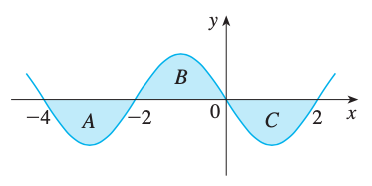
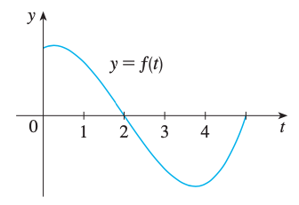

Ejercicios propuestos segundo examen parcial
Ejercicio
Calcula las siguientes integrales.
- $\displaystyle{\int_{-2}^{1} 4 dx}$.
- \(\displaystyle{ \int_a^b x \, dx } \)
- \(\displaystyle{ \int_{-1}^{2} (1 - 2x) \, dx } \)
- $\displaystyle{\int_{-\pi}^{2\pi} \pi dx}$.
- $\displaystyle{\int_{-3}^{3} 2x dx}$.
- $\displaystyle{\int_{-1}^{0} x^{99} dx}$.
- $\displaystyle{\int_{-2}^{1}(3x+4)dx}$.
- $\displaystyle{\int_{6}^{8}(7x-8)dx}$.
- \( \displaystyle{ \int_{0}^{3} |2 - x| \, dx } \).
- $\displaystyle{\int_{-2}^{3}(2x+4)dx}$.
- $\displaystyle{\int_{-3}^{2}(4x+7)dx}$.
- $\displaystyle{\int_{-1}^{2}|x|dx}$.
- $\displaystyle{\int_{-2}^{1}|x|dx}$.
- $\displaystyle{\int_{-a}^{a}|x|dx}, a >0$.
- $\displaystyle{\int_{-1}^{1}(2-|x|)dx}$.
- $\displaystyle{\int_{-2}^{5} (3 - x -2|x|)dx}$.
- $\displaystyle{\int_{0}^{6} (|12 - 4x| -4)dx}$.
- $\displaystyle{\int_{-2}^{2}(x^2 -1)(x^2-4)dx}$.
- $\displaystyle{\int_{-3}^{3}(9x -4x^2)dx}$.
- $\displaystyle{\int_{a}^{a^2}x^2dx}$.
- $\displaystyle{\int_{-a}^{1}(x^2+x)dx}$.
- $\displaystyle{\int_{-1}^{2}|x^2|dx}$.
- $\displaystyle{\int_{0}^{2} (6x-3)^{5}dx}$.
- $\displaystyle{\int_{-1}^{6}(x+2)^{10}dx}$.
- $\displaystyle{\int_{-8}^{4}(x-4)^{20}dx}$.
- $\displaystyle{\int_{0}^{4}(x-1)^{5}xdx}$.
- \(\displaystyle{ \int_{-1}^{1} \left(u^5 - 3u^3 + \pi \right) \, du } \)
Ejercicio
Utiliza los resultados de la integral de Riemann vistos en clase para calcular el área de las
regiones especificadas en los ejercicios siguientes:
- Entre la gráfica de la función \( \displaystyle{y = 3x} \) y el eje X en el intervalo \( \displaystyle{[0, 1]} \).
- Entre la gráfica de la función \( \displaystyle{y = 2x + 1} \) y el eje X en el intervalo \( \displaystyle{[0, 3]} \).
- Entre la gráfica de la función \( \displaystyle{y = 2x - 1} \) y el eje X en el intervalo \( \displaystyle{[1, 3]} \).
- Entre la gráfica de la función \( \displaystyle{y = 3x + 4} \) y el eje X en el intervalo \( \displaystyle{[-1, 2]} \).
- Entre la gráfica de la función \( \displaystyle{y = x^2} \) y el eje X en el intervalo \( \displaystyle{[1, 3]} \).
- Entre la gráfica de la función \( \displaystyle{y = x^2 + 1} \) y el eje X en el intervalo \( \displaystyle{[0, a]} \), donde \( \displaystyle{a > 0} \).
- Entre la gráfica de la función \( \displaystyle{y = x^2 + 2x + 3} \) y el eje X en el intervalo \( \displaystyle{[-1, 2]} \).
- Entre la gráfica de la función \( \displaystyle{y = x^2 - 1} \) y el eje X (por encima del eje X, es decir, cuando la función es negativa).
- Entre la gráfica de la función \( \displaystyle{y = 1 - x} \) y el eje X en el intervalo \( \displaystyle{[2, 4]} \), por encima del eje X.
- Entre la gráfica de la función \( \displaystyle{y = x^2 - 2x} \) y el eje X (por encima del eje X).
- Entre la gráfica de la función \( \displaystyle{y = 4x - x^2 + 1} \) y la recta \( \displaystyle{y = 1} \).
Ejercicio
Calcular:
- $\displaystyle{\int_1^8 (x+8)^{10}dx}$
- $\displaystyle{\int_{10}^{11} \sqrt{x-3}dx}$
- $\displaystyle{\int_1^2 x\sqrt{x-1}dx}$
- $\displaystyle{\int_{2}^{3}x^2\sqrt{x-2}dx}$
- $\displaystyle{\int_{5}^{6} x\sqrt[3]{x-4}}$
- $\displaystyle{\int_{-2}^{4} \sqrt[4]{x-2}dx}$.
- $\displaystyle{\int_{8}^{9}\sqrt[3]{x+7}dx}$.
Sugerencia: Puedes utilizar
$$
\int_a^b x^p dx=\frac{b^{p+1}-a^{p+1}}{p+1}
$$
válida para cualesquiera reales $a$ y $b$ y racional $p$.
Ejercicio
Sean $f,g \colon \mathbb{R} \to \mathbb{R}$ funciones continuas tales que para todo $a \in \mathbb{R}$
se satisface
$$\int_{-a}^{a} f(x) dx = \int_{-a}^{a} g(x) dx$$
Da un argumento intiutivo para mostrar que $f(0) = g(0)$. Explica tu idea mediante una gráfica.
Ejercicio
Utiliza las hipótesis dadas para cualcular lo requerido. Menciona claramente las propiedades de la
integral de Riemann utilizadas.
- Si $\displaystyle{\int_{3}^{5} f(x) dx = 2}$, encuentra $\displaystyle{\int_{5}^{3} -4f(x)}$
- Si $\displaystyle{\int_{5}^{-3} \left(\frac{-3f(x)}{4}\right) dx = 7 }$, encuentra $\displaystyle{\int_{5}^{-3} (6f(x) + 1) dx}$
- Si $\displaystyle{\int_{1}^{4} \left(\frac{f(x)}{3}\right) dx = 2 }$, encuentra $\displaystyle{\int_{1}^{4} 3f(x) dx}$
- Si $\displaystyle{\int_{2}^{1} f(x) dx = 0}$ y $\displaystyle{\int_{1}^{2} g(x) dx= 0}$, encuentra $\displaystyle{\int_{2}^{1} (f(x) - 3g(x) + 5)} dx$
- Si $\displaystyle{\int_{6}^{8} (3f(x) - x)dx = 6}$ y $\displaystyle{\int_{8}^{6} (2x + 4g(x)) dx = -8}$,
encuentra $\displaystyle{\int_{8}^{6} (f(x) - 5g(x))} dx$
- Si \( \displaystyle{ \int_{0}^{9} f(x)\,dx = 37 } \) y
\( \displaystyle{ \int_{0}^{9} g(x)\,dx = 16 } \),
encuentre
\( \displaystyle{ \int_{0}^{9} [2f(x) + 3g(x)]\,dx } \).
- Si \( \displaystyle{ \int_{1}^{5} f(x)\,dx = 12 } \) y \( \displaystyle{ \int_{4}^{5} f(x)\,dx = 3.6 } \),
encuentre \( \displaystyle{ \int_{1}^{4} f(x)\,dx } \).
Ejercicio
Escriba como una sola integral en la forma
\( \displaystyle{ \int_{a}^{b} f(x)\,dx } \).
\( \displaystyle{ \int_{-2}^{2} f(x)\,dx + \int_{2}^{5} f(x)\,dx - \int_{-2}^{-1} f(x)\,dx } \)
Ejercicio
Cada una de las regiones $A$, $B$, y $C$, limitadas por la gráfica de $f$ y el eje $X$, tiene área $3$.
Encuentre el valor de $\displaystyle{\int_{-4}^2 \left( f(x) +2x +5 \right) dx}$

Ejercicio
Si \( \displaystyle{ F(x) = \int_{2}^{x} f(t)\,dt } \), donde \( f \) es la función cuya gráfica está dada,
¿cuál de los siguientes valores es el más grande?
- \( F(0) \)
- \( F(1) \)
- \( F(2) \)
- \( F(3) \)
- \( F(4) \)

Ejercicio
Expresa los siguiente límites como integrales. No es necesario evaluar la integral.
- $\displaystyle{\lim_{n\to \infty} \frac{1}{n} \sum_{i=1}^n e^{(3i)/n}}$.
- $\displaystyle{\lim_{n\to \infty} \frac{\pi}{n} \sum_{i=1}^n \sen\left(\pi+\frac{\pi i}{n} \right)}$.
- $\displaystyle{\lim_{n\to \infty} \frac{1}{n} \sum_{i=1}^n \sqrt{2+\frac{i}{n}}}$.
- $\displaystyle{\lim_{n\to \infty} \frac{1}{n} \sum_{i=1}^n \frac{1}{3+(i/n)^2}}$.
Sugerencia: Utiliza los resultados previos a la definición de sumas de Riemann.
Ejercicio
Sea $f:\mathbb{R}\to \mathbb{R}$ una función tal que, para toda $a>0$,
$f$ es integrable en $[-a,a]$.
-
Si $f$ es una función par (\(f(-x)=f(x)\) para todo \(x\)) probar:
$$
\int_{-a}^a f(x)dx=2\int_0^af(x)dx
$$
-
Si $f$ es una función impar (\(f(-x)=-f(x)\) para todo \(x\)) probar:
$$
\int_{-a}^af(x)dx=0
$$
Ejercicio
Evalúa las siguientes integrales. Utiliza las propiedades de la integral de Riemann
y la interpretación de la integral como el área entre la gráfica de la función y el eje $X$.
Analiza la simetría (paridad o imparidad) de las funciones cuando sea posible, y cuando aplique
aprovecha sus propiedades geométricas.
- \(\displaystyle{ \int_{-\sqrt{2}}^{\sqrt{2}} \sqrt{2 - t^2} \, dt } \)
- \(\displaystyle{ \int_{-\sqrt{2}}^{0} \sqrt{2 - x^2} \, dx } \)
- \(\displaystyle{ \int_{-\pi}^{\pi} \sin(x^3) \, dx } \)
- \(\displaystyle{ \int_{-a}^{a} (a - |x|) \, dx } \)
- \(\displaystyle{ \int_{0}^{9}} (2 + \sqrt{x^2}) \, dx \)
- \(\displaystyle{ \int_{0}^{1} \sqrt{1-x^2} \, dx } \)
- \(\displaystyle{ \int_{-3}^{0} (1 + \sqrt{9 -x^2}) \, dx } \)
- \(\displaystyle{ \int_{-5}^{5} (x - \sqrt{25 -x^2}) \, dx } \)
- \(\displaystyle{ \int_{0}^{2} \sqrt{2x - x^2} \, dx } \)
- \(\displaystyle{ \int_{-4}^{4} \left(e^x - e^{-x} \right) \, dx } \)
Ejercicio
Aplique las propiedades de las integrales para verificar la desigualdad sin evaluar las integrales.
-
\(\displaystyle{ \int_{-1}^{0} e^x \, dx \leq \int_{-1}^{0} e^{-x} \, dx }\)
-
\(\displaystyle{ \int_{0}^{\pi/4} (\cos x - \sen x) \, dx \geq 0 }\)
-
\(\displaystyle{ 1 \leq \int_{0}^{1} \sqrt{x^3 + 1} \, dx \leq 1.42 }\)
-
\(\displaystyle{ -2 \leq \int_{0}^{2} (x^2 - 2x) \, dx \leq 0 }\)
Ejercicio
Sea $c$ el punto medio de $[a,b]$ y $m,h\in \mathbb{R}$ constantes
arbitrarias pero fijas. Prueba que
$$\int_{a}^{b} (m(x-c) + h ) dx = h(b-a)$$
Ejercicio
Sea $f \colon [a,b] \to \mathbb{R}$ una función continua y positiva en $[a,b]$ y sea $c$
el punto medio de $[a,b]$. Denotemos por $L$ la linea que es tangente a $y= f(x)$ en el
punto medio $(c,f(c))$. Si la gráfica de de $f$ se encuentra arriba de $L$, entonces prueba que
$$f\left( \frac{a+b}{2}\right) (b-a) \leq \int_{a}^{b} f(x) dx $$
Ejercicio
Sea $f \colon [a,b] \to \mathbb{R}$ una función continua y positiva en $[a,b]$ tal que
su gráfica en el intervalo $[a,b]$ nunca se encuentra por debajo de la cuerda que une $(a,f(a))$ y
$(b,f(b))$. Calculando el area del trapezoide cuyos vertices son $(a,0), (b,0) (b,,f(b))$ y $(a,f(a))$
deduce que
$$\int_{a}^{b} f(x) dx \leq (b-a)\left(\frac{f(a) + f(b)}{2}\right) $$
Ejercicio
Sean $p,q$ números reales tales que $a>0$ y $b >0$. Prueba o da un contraejemplo de la siguiente identidad
$$\int_{0}^{1} x^{p} \cdot x^{q} dx =\left( \int_{0}^{1} x^{p} dx \right) \cdot \left(\int_{0}^{1} x^{q} dx \right) $$
Ejercicio
Prueba o da un contraejemplo de la siguiente identidad
$$\int_{a}^{b} f(x)\cdot 1 dx = \left( \int_{a}^{b} f(x) dx \right) \cdot \left(\int_{a}^{b} 1dx \right) $$
Ejercicio
Encuentra en ejemplo de un intervalo $[a,b]$ y un par de funciones $f,g \colon [a,b] \to \mathbb{R}$
integrables en $[a,b]$ tales que $\displaystyle{\int_{a}^{b} g(x) \not = 0}$ y
$$\displaystyle{\int_{a}^{b}} \displaystyle{\frac{f(x)}{ g(x)}} dx \not= \frac{\displaystyle{\int_{a}^{b} f(x) dx }}{\displaystyle{\int_{a}^{b} g(x) dx }}$$
Ejercicio
Para cada uno de los siguientes ejercicios la funcion $F\colon [0,\infty) \to \mathbb{R}$ es una función en la variable $x$
que aparece en el límite (o los límites) de integración de la integral dada.
Expresa la función $F(x)$ explicitamente calculando la integral.
- $\displaystyle{F(x) := \int_{1}^{x}(3t^{2} + 1) dt} $
- $\displaystyle{F(x) := \int_{x}^{1}(2t + t^{-2}) dt} $
- $\displaystyle{F(x) := \int_{1}^{x^{2}}(2t + 3t^{2}) dt} $
- $\displaystyle{F(x) := \int_{1}^{x^{2}}(\sqrt{t}) dt} $
Ejercicio
Encuentra $p$, un polinomio de grado 3, tal que $p(0)=p(-1)=0, p(1)=5$ y $2\displaystyle{\int_0^1 p(x)dx}=4$
Ejercicio
Encuentra todos los polinomios de grado 2, $p$, tales que $p(0)=1$ y $\displaystyle{\int_{-2}^{2}p(x)dx}=0$.
Ejercicio
Encuentra todos los reales $a,b$, con $a \leq b$, tales que $$\int_{a}^{b}(3-2x)^5dx=0.$$
Ejercicio
Para $0< b < 1,$ encuentre la integral de
$$
\int_0^b \frac{1-x^{n+1}}{1-x}dx
$$
Sugerencia: usar
$$
\sum_{j=1}^n x^j=\frac{1-x^{n+1}}{1-x}
$$
la cual es válida para \(|x|< 1\).
Ejercicio
Este ejercicio muestra que en la teoría de integración en intervalos cerrados y
acotados es suficiente estudiar funciones definidas en $[0,1]$.
Si $f:[a,b]\to \mathbb{R}$ es una función integrable en $[a,b]$, entonces
$$\int_a^bf(x)dx=(b-a)\int_0^1 f(a+(b-a)t)dt$$
Ejercicio
La medida geométrica de un intervalo
Existen otras nociones de longitues.
Dado $(a,b)\subset (0,\infty)$ se define se define su
medida o longitud geométrica como
$$
\lambda(a,b)=\ln(b)-\ln(a),
$$
donde $\ln$ denota la función logaritmo. Se puede pensar a la
medida geométrica como un análogo de la longitud ( $b-a$) y
$(0,\infty)$ podemos pensar la multiplicación por reales positivos
como un análogo de la translación.
-
Prueba que $\lambda(\gamma a,\gamma b)=\lambda(a,b)$, para $\gamma >0$.
-
Para una función escalonada con dominio contenido en \((0,+\infty)\),
$s:(0,+\infty)\to \mathbb{R}$, su integral sobre \([a,b]\), con respecto a la medida
geométrica, se define como:
$$
\int_a^b s(x)d\lambda(x):=\sum_{i=1}^n s_i (\ln(x_i)-\ln(x_{i-1}))
$$
donde \(P=\{x_i\}_{i=1}^n\) es una partición de \([a,b]\) tal que \(s\)
es constante en \((x_{i-1},x_i)\) y el valor de dicha constante es \(s_i\).
-
Si $\gamma >0$ prueba que :
$$
\int_{a/\gamma}^{b/\gamma} s(\gamma x)d\lambda(x)=\int_a^b s(u)d\lambda(u)
$$
Ejercicio
Da un ejemplo de una función $f:[a,b]\to \mathbb{R}$ tal que $f^2$ es integrable en $[a,b]$ pero $f$ no lo sea.
Ejercicio
Da un ejemplo de una función $f:[a,b]\to \mathbb{R}$, integrable en $[a,b]$ y tal que
$$
\int_a^b f^2(x)dx \ne \left( \int_a^b f(x)dx \right)^2
$$
Ejercicio
El ejercicio Ejercicio 3.24
muestra que la relación entre $\displaystyle{\int_a^b f^2(x) dx}$ y $\displaystyle{\left(\int_a^bf(x) dx\right)^2}$ no es sencilla.
Este ejercicio da una desigualdad que involucra estas integrales.
-
Demuestra que para toda función continua $f:[a,b]\to \mathbb{R}$,
$$
\left( \int_a^b f(x)dx \right)^2 \leq (b-a)\int_a^b f^2(x)dx.
$$
-
Da un ejemplo donde se muestre que la desigualdad anterior puede ser estricta.
Ejercicio
Sean $f,g:[a,b] \to \mathbb{R}$ dos funciones integrables en $[a,b]$.
Demuestra que la función producto $fg$ es integrable en $[a,b]$.
Sugerencia: $(f+g)^2=f^2+2fg+g^2$.
Ejercicio
-
Prueba que toda suma $\displaystyle{\sum_{i=1}^n a_i}$, se puede escribir como
la integral de una función escalonada.
-
Usa el inciso anterior y la desigualdad de Cauchy-Schwartz para integrales para
probar la Desigualdad de Cauchy-Schwartz en $\mathbb{R}^n$
$$
\left| \sum_{i=1}^n a_ib_i \right| \leq
\left(\sum_{i=1}^n a_i^2 \right)^{1/2}\left(\sum_{i=1}^n b_i^2 \right)^{1/2}
$$
para cualesquiera números reales, $a_{1},\dots, a_n, b_1,\dots, b_n$.
Ejercicio
Sea $f:[0,1]\to \mathbb{R}$ una función integrable en $[0,1]$ con $f\geq 0$ en $[0,1]$.
Demuestra:
$$
\int_0^1\sqrt{f}\leq \bigg(\int_0^1 f \bigg)^{1/2}
$$
Sugerencia: usa la desigualdad de Cauchy-Schwartz para integrales.
Nota: En general , si $f$ es integrable con $f\geq 0$ entonces $\sqrt{f}$
también es integrable. Este hecho se puede usar
en este ejercicio.
Ejercicio
Calcula las siguientes integrales
- \( \displaystyle{ \int_{-3}^{2} f(x) \, dx } \), donde $f(x) =
\begin{cases}
1 + x & \text{si } x < 0 \\
2 & \text{si } x \geq 0
\end{cases}
$
- \( \displaystyle{ \int_{0}^{2} g(x) \, dx } \), donde $
g(x) =
\begin{cases}
x^2 & \text{si } 0 \leq x \leq 1 \\
x & \text{si } 1 < x \leq 2
\end{cases}
$
-
\( \displaystyle{ \int_{-1}^{2} \operatorname{sgn}(x) \, dx } \) donde \( \operatorname{sgn}(x) = \begin{cases} 1, & \text{ si } x > 0\\ 0,& \text{ si } x=0 \\ -1, & \text{ si } x < 0 \end{cases} \).
- \( \displaystyle{ \int_{0}^{2} \sqrt{4 - x^2} \, \operatorname{sgn}(x - 1) \, dx } \).
- \( \displaystyle{ \int_{-3}^{4} \left( |x + 1| - |x - 1| + |x + 2| \right) \, dx } \).
- \( \displaystyle{ \int_{0}^{3} \frac{x^2 - x}{|x - 1|} \, dx } \).
Ejercicio
Supón que \( a < b \) y que \( f \) es continua en \([a, b]\). Encuentra la constante \( k \) que minimiza la integral
\[
\displaystyle{ \int_{a}^{b} (f(x) - k)^2 \, dx }
\]
Ejercicio
Sea $f\colon \mathbb{R} \to \mathbb{R}$ una función continua en $\mathbb{R}$ tal que
$\displaystyle{\int_{1}^{2} f(x) dx = 4 }$. Prueba que existe $c \in [1,2]$ tal que $f(c)=4$
Ejercicio
Sean $f,g \colon [a,b] \to \mathbb{R}$ funciones continuas en $[a,b]$ con $a < b$ tales que
$\displaystyle{\int_{a}^{b} (f(x) -g(x)) dx = 0 }$. Prueba que existe $c \in [a,b]$ tal que $f(c)=g(c)$
Ejercicio
En el Segundo Teorema Fundamental se pide en las hipótesis que la función $f$
sea continua en $[a,b]$, pero se puede cambiar ésta hipótesis pidiendo ahora
que $f$ sea una función monónota en $[a,b]$. Es decir:
Si $f:[a,b] \to \mathbb{R}$ es una función monótona en $[a,b]$ y
$F:[a,b]\to \mathbb{R}$ es una función continua en $[a,b]$, diferenciable en
$(a,b)$ y $F$ es una antiderivada de $f$ en $(a,b)$. Entonces
$$
\int_a^bf(x)dx=F(b)-F(a).
$$
Utiliza las mismas ideas de la demostración presentada en clase del Segundo Teorema Fundamental del
Cálculo para demostrar esta versión del segundo T.F.C.
Ejercicio
Usa el Ejercicio 3.32
para probar la siguiente versión del segundo T.F.C.
Si $f:[a,b] \to \mathbb{R}$ es una función monótona en $[a,b]$ y $F:[a,b]\to \mathbb{R}$ una función continua en $[a,b]$, diferenciable en $(a,b)$
excepto en $E \subset (a,b)$, un conjunto finito de $(a,b)$ y $F'(x)=f(x)$ para
todo $x\in (a,b)\setminus E$, entonces
$$
\int_a^bf(x)dx=F(b)-F(a).
$$
Ejercicio
Encuentre la antiderivada $F$ de $f$, que satisfaga la condición dada.
- $f(x)= 5x^4 - 2 x^5$, $F(0)=4$
Ejercicio
Calcular las siguientes integrales indefinidas.
- \(\displaystyle{\int \frac{2}{\sqrt[3]{x}} \, dx}\)
- \(\displaystyle{\int \frac{4\sqrt[4]{x}}{3} \, dx}\)
- \(\displaystyle{\int \frac{3\sqrt[3]{x}}{2} \, dx}\)
- \(\displaystyle{\int 3 \frac{1}{x^3} \, dx}\)
- \(\displaystyle{\int \frac{dx}{\sqrt{x}}}\)
- \(\displaystyle{\int \left( \frac{1}{x^2} + \frac{2}{x^3} \right) \, dx}\)
Ejercicio
Calcular las siguientes integrales indefinidas utilizando una substitución apropiada.
- $\displaystyle{\int x(x^{2} +1)^{5}dx}$.
- $\displaystyle{\int 4x e^{x^{2}}dx}$.
- $\displaystyle{\int x^{2} \sqrt{x^{3}+1} dx}$.
- $\displaystyle{\int x^{2}e^{x^{3}}dx}$.
- $\displaystyle{\int \frac{2-x}{\sqrt{2x^{2} - 8x +1}}dx}$.
- $\displaystyle{\int (x^{2} + 2x + 3)^{6}(x+1) dx}$.
- $\displaystyle{\int x e^{-x^{2}}dx}$.
- $\displaystyle{\int (x^{6} -6x)^{7}(x^{2} -2) dx}$.
- $\displaystyle{\int \frac{x-3}{(1- 6x +x^{2})^{2} }dx}$.
- $\displaystyle{\int \frac{e^{\sqrt{x}}}{\sqrt{x}} dx}$.
- $\displaystyle{\int x^{-2} \left( \frac{1}{x} +2 \right)^{2}dx}$.
- $\displaystyle{\int \frac{x^{2}}{1- x^{5}}dx}$.
- $\displaystyle{\int \frac{8x}{e^{x^{2}}} dx}$.
- $\displaystyle{\int e^{x} (1 + e^{x} )^{5} dx}$.
- $\displaystyle{\int \frac{(1 + e^{-x})^{3} }{e^{x}} dx}$.
Ejercicio
Calcular las siguientes integrales indefinidas utilizando una substitución apropiada.
- $\displaystyle{\int \frac{1}{1 + e^{x}} dx}$.
- $\displaystyle{\int \frac{e^{2x} - 1 }{e^{2x} + 1} dx}$.
Sugerencia: Multiplica el númerador y denominador por $e^{-x}$
Ejercicio
Calcular las siguientes integrales indefinidas.
- $\displaystyle{\int \sen(x)dx}$.
- $\displaystyle{\int \cos(x)dx}$.
- $\displaystyle{\int \sec^2(x)dx}$.
- $\displaystyle{\int \csc^2(x)dx}$.
- $\displaystyle{\int sec(x)tan(x)dx}$.
- $\displaystyle{\int \csc(x)\cot(x)dx}$.
Ejercicio
Calcular las siguientes integrales indefinidas utilizando una substitución apropiada.
- $\displaystyle{\int \mathrm{sen}(x) \mathrm{cos}(x)dx}$.
- $\displaystyle{\int x\mathrm{cos}(x^{2})dx}$.
- $\displaystyle{\int \frac{\mathrm{cos}(x)}{\sqrt{x}} dx}$.
- $\displaystyle{\int \frac{\mathrm{cos}(x)}{(2 + \mathrm{sin}(x))^{3}}dx}$.
- $\displaystyle{\int \mathrm{cos}^{3}(x) \mathrm{sen}(x) dx}$.
- $\displaystyle{\int \mathrm{tan}(x)dx}$.
- $\displaystyle{\int \frac{\mathrm{cos}(3x)}{\sqrt{2-\mathrm{sin}(3x)}} dx}$.
- $\displaystyle{\int \mathrm{cot}(x)dx}$.
- $\displaystyle{\int \mathrm{sin}(2x) e^{\mathrm{cos}(2x)}dx}$.
- $\displaystyle{\int \mathrm{tan}(x) \mathrm{sec}^{2}(x)dx}$.
Ejercicio
Calcular las siguientes integrales definidas:
- $\displaystyle{\int_{1}^{4} \frac{(1 + \sqrt{x})^{\frac{1}{2}}}{ \sqrt{x}} dx}$.
- $\displaystyle{\int_{0}^{1} \frac{1}{\sqrt[3]{(1+7x)^{2}}} dx}$.
- $\displaystyle{\int_{0}^{2} \frac{2t^{3}}{\sqrt{x^{4} +9}} dx}$.
- $\displaystyle{\int_{\frac{\pi^{2}}{4}}^{\pi^{2}} \frac{\mathrm{cos}(x)}{\sqrt{x}} dx}$.
- $\displaystyle{\int_0^{\frac{\pi}{3}} \frac{\mathrm{tan}(x)}{\sqrt{2\mathrm{sec}(x)}} dx}$.
- $\displaystyle{\int_0^{\frac{\pi}{2}} \frac{\mathrm{sen}(x)\mathrm{cos}(x)}{\sqrt{1 + 3\mathrm{sen}^{2}(x)}} dx}$.
- $\displaystyle{\int_{\pi}^{3\pi}\frac{\mathrm{cos}(\sqrt{x})}{\sqrt{ x\mathrm{sen}^{2}(\sqrt{x})}} dx}$.
Ejercicio
Demuestra que para toda
\(x\in \mathbb{R}\)
\[
1+x \leq e^x.
\]
-
Fija $x>0$. Integra ambos lados de la desigualdad anterior en el intervalo $[0,x]$ y
usa el Segundo Teorema Fundamental para obtener
$$
e^x \geq 1+x +\frac{x^2}{2}.
$$
-
Generaliza el ejercicio anterior y prueba que, para todo natural $n\geq 1$:
$$
e^x \geq \sum_{k=0}^n \frac{x^k}{k!}.
$$
Observación: Nota que $\displaystyle{\sum_{k=0}^n \frac{x^k}{k!}}$ es el $n$-ésimo polinomio de Taylor de $e^x$. Asi
que el ejercicio dice que, en $[0, \infty)$, las gráficas de los polinomios de Taylor
de $e^x$ están por debajo de la gráfica de $e^x$.
-
¿Es cierto que
$$
e^x \geq \sum_{k=0}^n \frac{x^k}{k!}
$$
si $x < 0 $? Demuestra o da un contraejemplo.
Ejercicio
Usando el segundo T.F.C. encuentra una fórmula general para
$$
\int_a^b x^{n}e^{x^{n+1}}dx
$$
donde $n \geq 1$ es un natural.
Ejercicio
Para cada una de las funciones dadas $f$, encuentra la regla de
correspondencia de $\displaystyle{\tilde{F}(x):=\int_a^x f(t)dt}$
y después calcula $\tilde{F}'(x)$. Justifica apropiada tus respuestas.
- $f(x)=x^2$, con $a=0$;
- $f(x)=x^2$, con $a=1$;
- $f(x)=e^x$, con $a=0$;
- $f(x)=e^{5x+2}$, con $a=-1$.
- $f(x)=\cos(x)$, $a=0$;
- $f(x)=\sen(x)$, $a=0$;